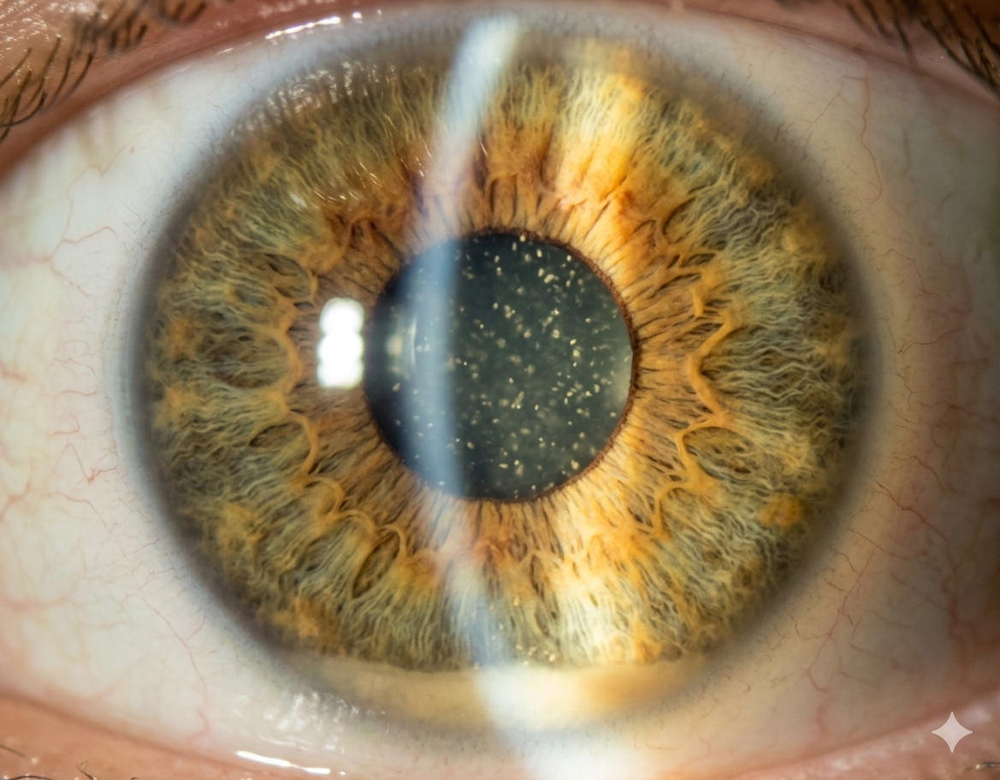

A patient has a hypopyon. What is the most important thing this could be tonight — and who do you call?

UVEA is an educational resource designed to support resident learning. It is not intended to replace clinical judgment, attending consultation, or institutional protocols.
About / Scope
About On Call Now
Short, tappable triage modules for residents responding to uveitis-related calls. Built to help you recognize and escalate — fast.
What it does
Helps you separate time-critical infection from severe sterile inflammation
Points you toward the right service to contact
Shows the reasoning behind each recommendation
What it doesn't do
Recommend drugs, doses, or specific treatments
Analyze images or replace examination findings
Stand in for attending consultation or local protocols
UVEA is an educational resource designed to support resident learning. It is not a substitute for clinical judgment, attending consultation, or institutional protocols.